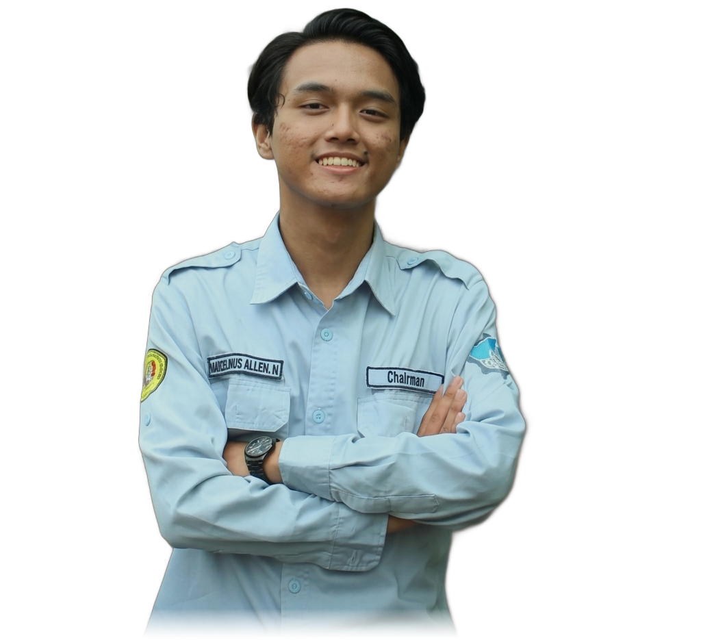
Marselinus Allen Nugraha
Electrical Engineering Student • Firmware & IoT Developer
Undergraduate in Electrical Engineering at UPN "Veteran" Jakarta (GPA 3.82/4.00) specializing in embedded firmware development (ESP32/ESP8266), IoT architectures (MQTT, Blynk), and industrial automation (PLC, TIA Portal, AutoCAD Electrical).
About Me
Engineering background, leadership, and technical focus
I am an Electrical Engineering student at Universitas Pembangunan Nasional "Veteran" Jakarta with a cumulative GPA of 3.82 / 4.00. Currently serving as Chairman at KSM IoT FT UPNVJ, I lead organizational initiatives across 3 departments and 9 divisions while actively developing hardware-software solutions. My practical expertise spans microcontrollers (ESP32/ESP8266), IoT protocols (MQTT, Blynk), industrial automation (PLC Siemens TIA Portal, Factory I/O), AutoCAD Electrical wiring, and applied AI with Python and computer vision.
Work & Organizational Experience
Leadership roles, firmware engineering, and academic laboratory assistance
Chairman
- Oversaw organizational management across 3 departments and 9 divisions, ensuring operational execution.
- Led strategic planning for participation in national engineering and technology competitions.
- Directed internal project development initiatives and coordinated multidisciplinary engineering teams.
- Supervised organizational programs, cross-divisional communication, and operational growth.
Staff of Firmware Division
- Developed embedded firmware for IoT systems using ESP32 and ESP8266 microcontrollers in Arduino C/C++.
- Integrated sensors, serial communication, MQTT protocol, and the Blynk platform for real-time telemetry monitoring.
- Assisted in debugging, testing, and optimizing firmware performance for low-latency embedded systems.
- Participated in the GEMASTIK and Futura Transporter Robot competitions, contributing to firmware architecture.
Laboratory Assistant
- Assisted lecturers in conducting experimental practicum for Electrical Measurement, Physics, Digital Systems, and Electronics.
- Supervised students during hands-on lab experiments involving circuit analysis, digital logic, and electronic instrumentation.
- Calibrated laboratory equipment, prepared experimental setups, and evaluated practical reports and exams.
Staff of Research & Development (Litbang)
- Contributed to the planning and execution of student academic and technical programs in Electrical Engineering.
- Project Officer of Propel KTI, Head of KTI Division at Electrolympic 2025, and Head of Event Division at Propel Software 2025.
Vice President
- Spearheaded post-COVID organizational revitalization, boosting continuity and member participation.
- Coordinated cross-functional teams to execute school music productions and organizational programs.
Education
Academic qualifications and background
Universitas Pembangunan Nasional "Veteran" Jakarta
Bachelor of Electrical Engineering (S.T.)
Jl. Limo Raya, Limo, Kota Depok, Jawa Barat 16514
SMAN 12 Tangerang
High School Diploma (IPA)
Larangan Utara, Kota Tangerang, Banten 15154
Core Skills & Technologies
Embedded firmware, industrial automation, and software engineering toolsets
Embedded Systems & IoT
Industrial Automation & Electrical
Programming & Applied AI
Featured Projects
Real-world engineering, industrial automation, and embedded systems
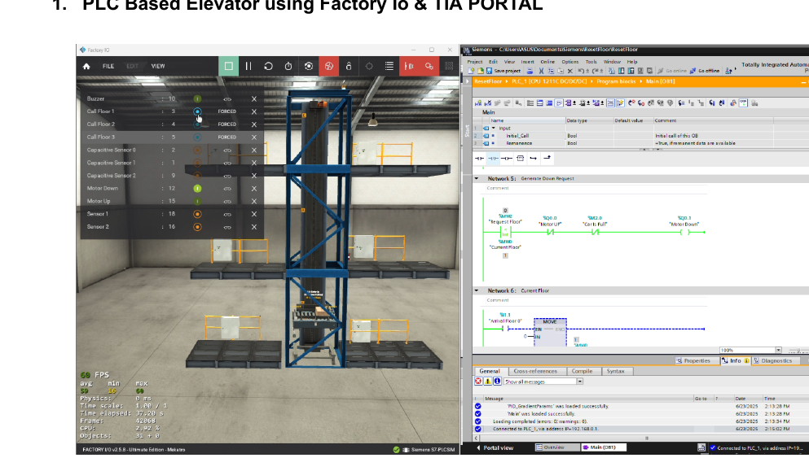
PLC-Based Elevator Simulation
Engineered a multi-floor industrial elevator controller using Siemens TIA Portal integrated with Factory I/O 3D simulation. Implemented call request sequencing, position encoders, safety interlocks, and motor direction controls.
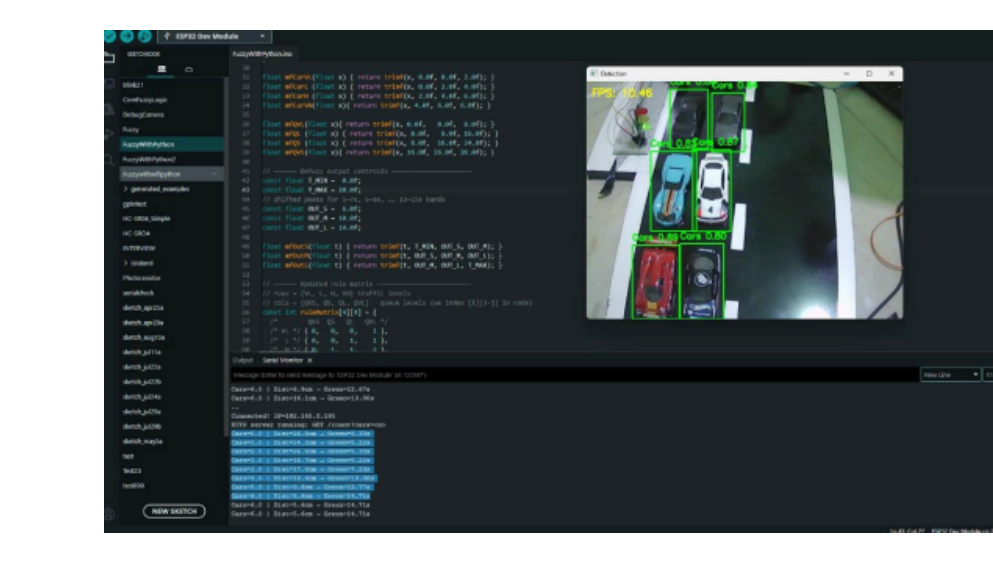
Prototype Fuzzy Traffic Controller
Designed an intelligent adaptive traffic light management system pairing computer vision (YOLO) for vehicle queue density detection with a Fuzzy Logic Controller executed on an ESP32 to adjust green light intervals in real time.
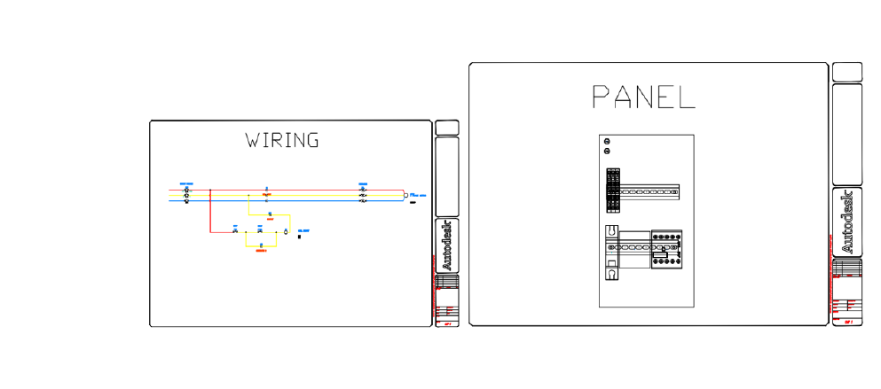
Direct On Line (DOL) Motor Starter & Panel Diagram
Designed complete schematic wiring and physical industrial panel layout in AutoCAD Electrical. Included power and control circuits, contactor & thermal overload sizing, terminal strip numbering, and automated Bill of Materials (BOM).
Certifications & Credentials
Professional courses, industry badges, and laboratory appointments
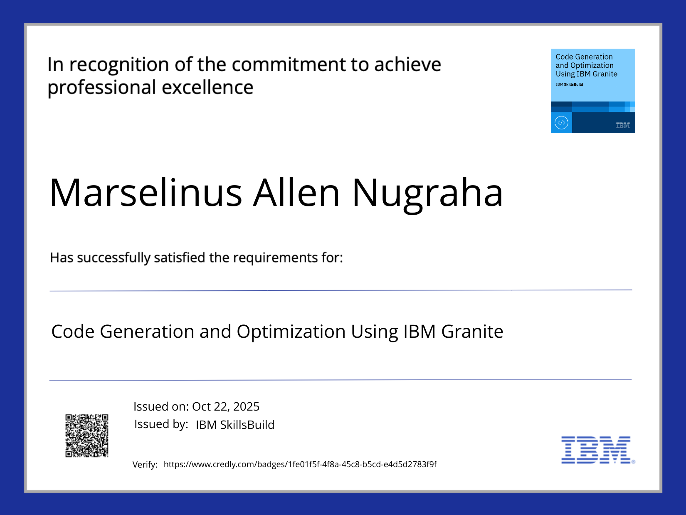
Code Generation and Optimization Using IBM Granite
IBM SkillsBuild
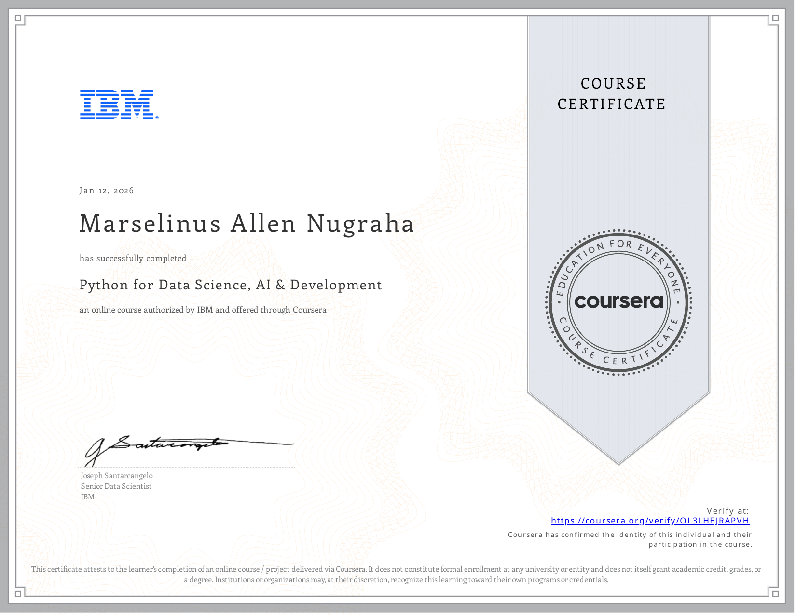
Python for Data Science, AI & Development
IBM & Coursera
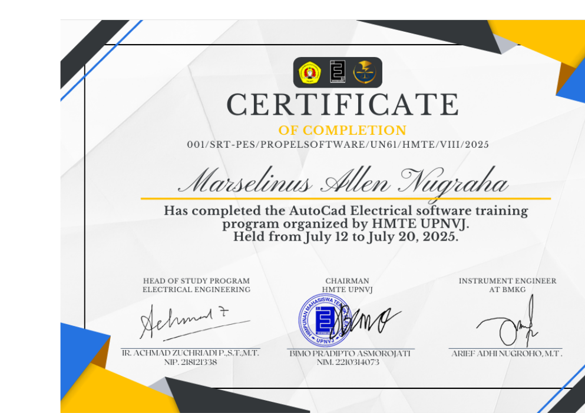
AutoCAD Electrical Software Training Program
Himpunan Mahasiswa Teknik Elektro (HMTE) UPNVJ
Credential ID: 001/SRT-PES/PROPELSOFTWARE/UN61/HMTE/VIII/2025
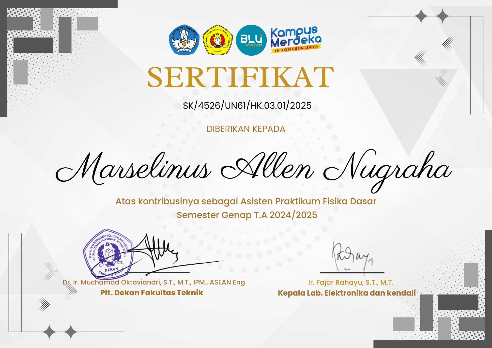
Certified Laboratory Assistant – Fisika Dasar
Laboratorium Teknik Elektro UPN "Veteran" Jakarta
Semester Genap T.A 2024/2025 • SK/4526/UN61/HK.03.01/2025
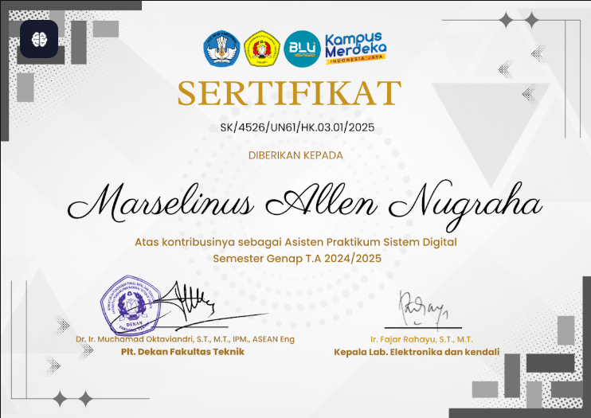
Certified Laboratory Assistant – Sistem Digital
Laboratorium Teknik Elektro UPN "Veteran" Jakarta
Semester Genap T.A 2024/2025 • SK/4526/UN61/HK.03.01/2025
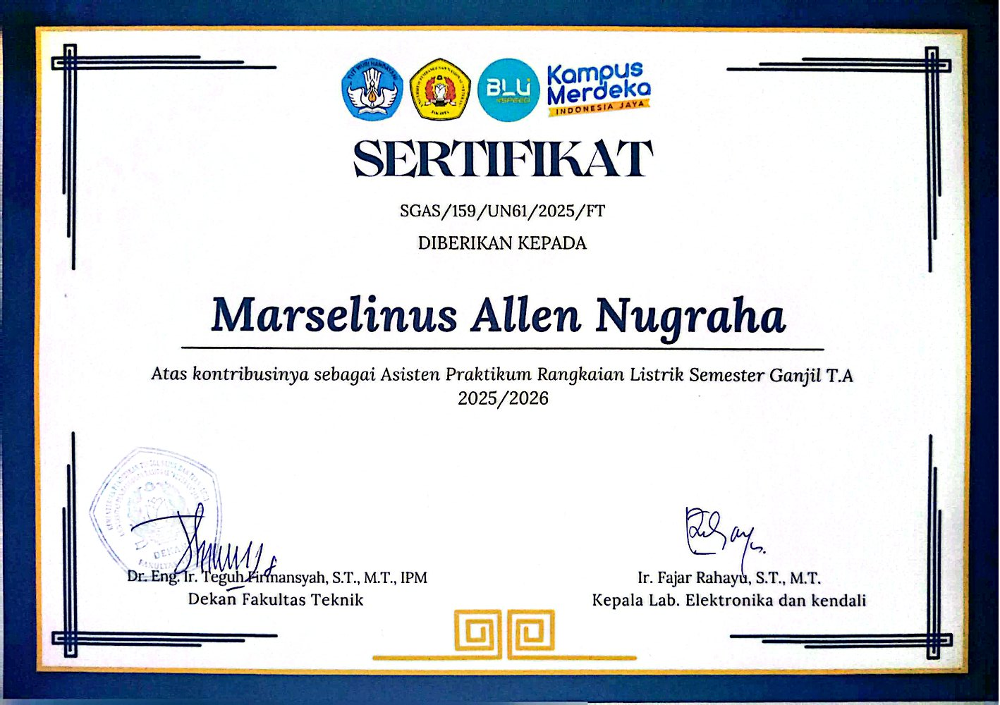
Certified Laboratory Assistant – Rangkaian Listrik
Laboratorium Teknik Elektro UPN "Veteran" Jakarta
Semester Ganjil T.A 2025/2026 • SGAS/159/UN61/2025/FT
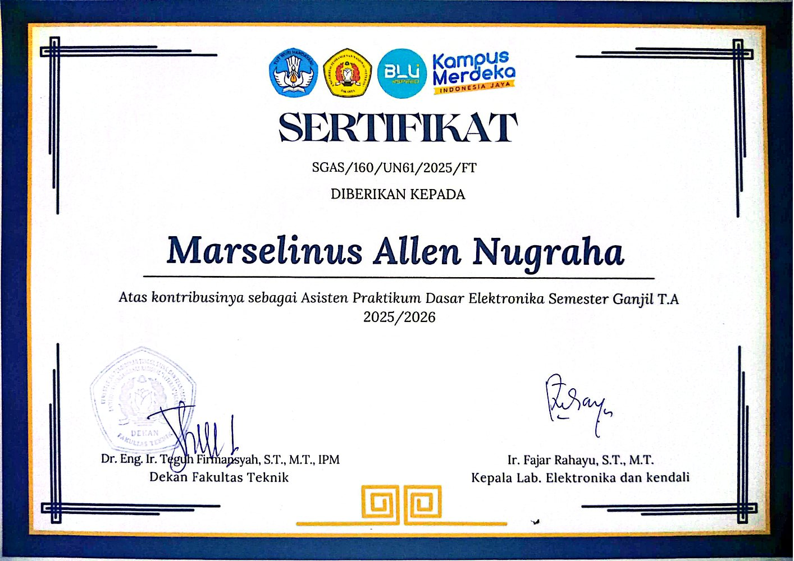
Certified Laboratory Assistant – Dasar Elektronika
Laboratorium Teknik Elektro UPN "Veteran" Jakarta
Semester Ganjil T.A 2025/2026 • SGAS/160/UN61/2025/FT
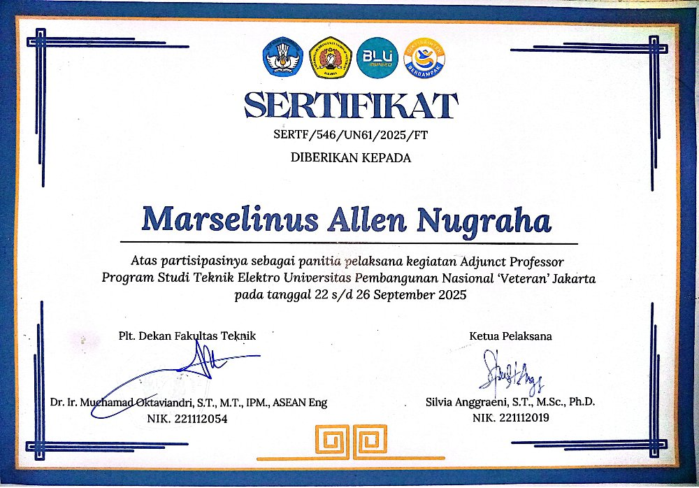
Adjunct Professor Program Committee
Program Studi Teknik Elektro UPN "Veteran" Jakarta
Credential ID: SERTF/546/UN61/2025/FT
Let's Connect & Collaborate
Open to firmware development, IoT engineering, industrial automation internships, and tech collaborations.